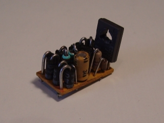
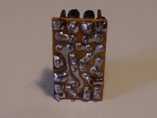

NAVIGATION
TOP of Page
MAIN Page
HOME Page
REVERSER
Convert
Connections
Operation
Assembly
|
Convert A Marklin Locomotive To Electronic Reversing
Input Voltage:
Output Voltage:
Output Current:
|
AC: 4-16V rms for drive, 24V rms for reversing
DC: 2-22V peak DC for drive, 36 volts DC for reversing
1.0 Amp capability
|
|

Electronic Reverser - top
|

Electronic Reverser - bottom
|
|
Connection To The Electronic Reverser
TOP
MAIN
HOME
Operation Of The Electronic Reverser
CAUTION: The mechanical reversing relay and the power transistor on the Electronic Reverser MUST be
isolated from the chassis as they are both at different potentials to the chassis. The Relay requires fitting
of an insulating plastic shoe and a plastic mounting screw. These are provided from the previous mounting of
the relay. The Electronic Reverser requires mounting using a top hat insulator and a mica or fibre sheet
insulator to mount the power transistor as per normal practice. The units were procured when I converted several
Electronic locos to digital operation. I had a couple of left over locos with poor performance in that the loco
low speed could not be bought down to a reasonable level. The Electronic Reverser allows crisp performance of
the reversing relay, giving no reversing over-run and a much need improvement in low speed running.
As the circuit is Marklin proprietary I will not show a circuit diagram. A tracing of the PCB gave an inkling of
the circuit, but not the component values of some of the components. Basically the circuit input from the track
is via the 'Shoe' and 'Motor Earth' (Chassis) connections. This is goes through a rectifier bridge consisting of
four EM401 power diodes. This powers two transistors. The low power one detects the 24V AC reverse pulse which
switches off the motor supply voltage to the power transistor and actuates the Reversing Relay. The circuit for
this is very similar to the AC Conversion Project on a previous page. The power transistor drives the common motor
connection with full wave rectified AC, returning via one of the field coil taps via the Reversing Relay contacts.
The headlights are connected directly to the Reversing Relay contacts and return via the previous chassis connection.
There is no need to isolate the globes, as everything seems to work correctly. The motor field coils are fed from
the same source via a couple of series connected diodes to reduce the minimum voltage available to the motor. This
is what gives the loco superior low speed performance. On thing I noted was that on one of the PCB's the diodes for
the motor were reversed, so that the connections to the headlights and the motor field coils had to be swapped.
This becomes obvious when the headlights change over with reverse, but the motor does not run in either direction.
TOP
MAIN
HOME
Assembly Of The Electronic Reverser
In the above image you can see the small Electronic Reverser PCB (2.0 * 1.2cm) fitted between the Reversing Relay
and the motor. Note the insulating mat between the power transistor and the chassis. For improved reliability
connect a lead between the motor earth and the chassis. What I have now are three previously deficient locos that
now have superior low speed running capabilities and well triggered reversing capabilities. Whilst not digital,
they are available for train club exhibition running or for use on a spare or a childs layout.
TOP
MAIN
HOME
|